LIBERTAÇÃO
MILAGROSA
No ano 42 o rei Herodes Agripa I com
sua costumeira crueldade, querendo ser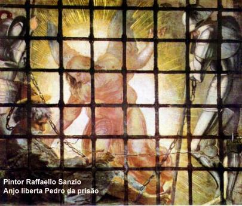
agradável aos judeus,
decidiu maltratar membros da Igreja. Mandou matar a espada o Apóstolo
Tiago Maior, irmão de João (o Evangelista) e vendo que os judeus festejaram
a iniciativa, também mandou prender Pedro. Lançou-o no cárcere e ordenou
que fosse vigiado por quatro guarnições de quatro soldados cada uma. Depois
da Páscoa tencionava apresentá-lo ao povo que iria julgá-lo. Enquanto
Pedro estava na prisão a Igreja não cessava de rezar por ele. Na noite em que
Agripa estava para apresentá-lo ao povo, Pedro dormia acorrentado entre dois
soldados. De súbito, o Anjo do SENHOR apareceu e a cela foi inundada de luz. O
Anjo despertou Pedro e lhe disse: “Levanta-te!
Depressa”. (At 12,7) No mesmo momento soltaram as correntes
de suas mãos. O Anjo lhe disse: “Cinge-te
e amarra as sandálias. Joga o teu manto sobre os ombros e segue-me.” (At 12,8) Foi o que ele fez. Passaram o primeiro e segundo posto de guardas
e alcançaram o portão de ferro que dá para a cidade. Ele se abriu por si mesmo diante
deles. Saíram e caminharam por uma rua, o Anjo desapareceu. Então Pedro compreendeu
que na verdade o SENHOR enviou o seu Anjo e o livrou das mãos do rei Herodes Agripa I
e da expectativa do povo judeu. Imediatamente dirigiu-se a casa de Maria Salomé,
mãe de João, onde rezavam por ele. Vibraram de alegria com a sua chegada, mas
ele fez sinal com a mão para que fizessem silêncio e pediu que avisassem os
demais irmãos e a Tiago Menor, porque desejava encontrar-se com ele. Em local
reservado encontrou-se com Tiago e o nomeou Chefe da Igreja em Jerusalém. Em
seguida, se ocultou para não ficar exposto as tramas de Herodes.
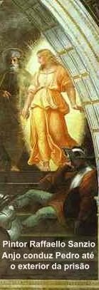
Nos Atos dos Apóstolos, São
Lucas não informa para onde Pedro foi. Entretanto, pelas citações no mesmo Atos
dos Apóstolos e nas Epístolas de São Paulo, não é difícil compreender que Pedro
realizou diversas viagens missionárias, incluindo Antioquia e outras regiões da Ásia
Menor. Para confirmar este fato, lembremos a primeira Carta que ele escreveu de
Roma, endereçada aos estrangeiros da Dispersão (Diáspora), ou seja, aos judeus
convertidos que viviam em outras terras no meio dos pagãos: na região do
Ponto, da Galáxia, da Capadócia, da Ásia Menor e da Bitínia. Com certeza
estava enviando aquela carta aos fieis que ele conhecia. Como sabemos, a Igreja
de Antioquia foi fundada no ano 37, pelos cristãos que fugiram de Jerusalém
durante a perseguição de Saulo de Tarso (At 8,1 e 11,19-21). A presença de
Pedro entre os cristãos de Antioquia, pode ser constatada, pelo episódio
narrado por Paulo na Carta em que escreveu aos Gálatas (Gal 2,11-21).
Por outro lado, pelas referências também de Paulo na sua Primeira Carta
à Igreja de Corinto (1 Cor 1,12; 3,22), compreende-se que ambos, Pedro e Paulo,
em épocas diferentes também trabalharam na mesma comunidade de Corinto.
Estes são alguns testemunhos inquestionáveis das viagens apostólicas
de Simão Pedro, a partir do ano 42 até o ano de 49, quando retornou
a Jerusalém para participar do Concílio Apostólico. (At 12,1-17)
CONCÍLIO
DE JERUSALÉM
No ano 49 foi convocado um Concílio
para tratar de assuntos importantes da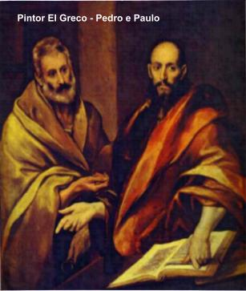
Igreja, principalmente
no âmbito da evangelização.
Paulo de Tarso, subiu a Jerusalém para
participar, objetivando resolver diversas questões que estavam interferindo no
completo êxito da missão evangelizadora. Ele teve a iniciativa de submeter às
autoridades conciliares, uma proposição a fim de abolir a obrigação da circuncisão
para os neocristãos, ou seja, as pessoas que receberam o sacramento do Batismo
não tinham a necessidade de serem circuncidadas, como condição de se tornarem
“cristãos”,
membros da Igreja e alcançarem a salvação eterna. Isto porque pela doutrina
cristã, só o Sacramento do Batismo é necessário, ele é o primeiro sacramento
da Iniciação, que faz do batizando um autêntico cristão e membro da Igreja de
CRISTO, além de neutralizar no fiel a ação do pecado original, de perdoar os
pecados cometidos até aquele dia, além de também infundir as três Virtudes Teologais:
Fé, Esperança e Caridade (Amor) e uma preciosa quantidade de graças
santificantes na alma do batizando, garantindo-lhe a salvação eterna.
Então o que estava ocorrendo na Igreja
Primitiva era um excesso de exigências para tornar-se cristão: para se converter
ao cristianismo eram obrigados a se submeterem aos dois ritos: primeiro o Batismo
(por imersão na Água) e depois era feita a Circuncisão (ablação da pele que cobre
a glande do pênis) como exigia a Lei mosaica.
Apoiando a proposição de Paulo, Pedro fez um bonito
discurso dizendo:
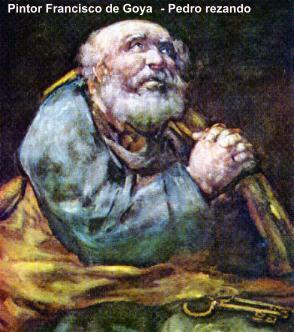
“Irmãos, vós sabeis que, desde os primeiros dias, DEUS me escolheu do meio de vós para
que os gentios (pagãos)
ouçam de minha boca a palavra do evangelho e abracem a fé. E DEUS, que conhece
os corações, testemunhou em seu favor, dando-lhes o ESPÍRITO SANTO como
a nós. Não fez distinção alguma entre eles e nós, pois purificou os seus corações
pela fé. Por que agora tentais a DEUS, querendo impor aos discípulos um jugo
que nem os vossos pais, nem nós tivemos a força de suportar? Aliás, é pela
graça do SENHOR JESUS que acreditamos ser salvos, exatamente como
eles.” (At 15,7-11)
Assim que Pedro terminou, Tiago Menor (como
chefe da Igreja em Jerusalém, ou seja, o Bispo de Jerusalém, embora a Diocese ainda
não existisse) se levantou e manifestando-se de pleno acordo disse:
“... julgo que não se devem
molestar os pagãos que se convertem a DEUS. Seja-lhes ordenado somente absterem-se
do que está contaminado pelos ídolos, das uniões ilegítimas, das carnes sufocadas e
do sangue.” (At 15,19-20)
Logo após, redigiram uma Carta Apostólica
com a decisão unânime da assembléia, onde os Apóstolos e Anciãos assinaram.
O documento foi enviado e lido em todas as Igrejas. (At 15,7-29)
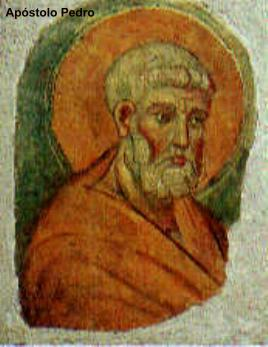
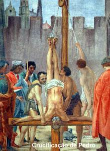
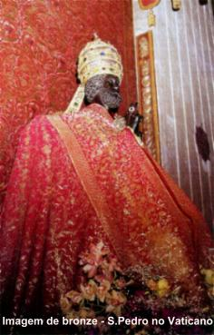
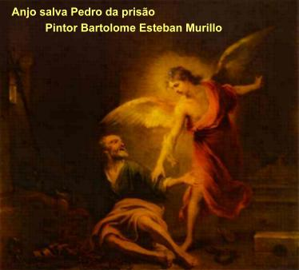
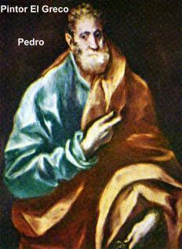
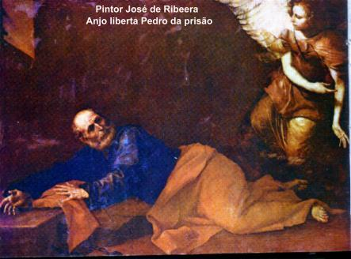
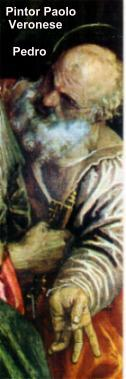
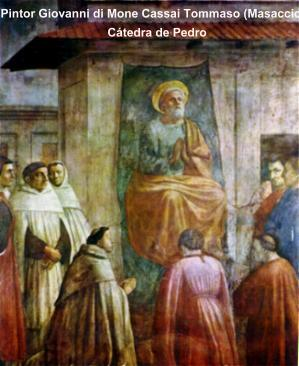

 Próxima Página
Próxima Página
Página Anterior
Retorna ao Índice